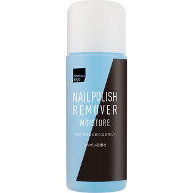

返回列表
产品名称：ｍａｔｓｕｋｉｙｏ ネイルリムーバー モイスチャー

コージー本舗 ｍａｔｓｕｋｉｙｏ ネイルリムーバー モイスチャー ２２０ｍｌ
メーカー コージー本舗
JANコード 4972915099386
商品の特徴
ネイルエナメルがすっきり落ちて、水分・潤いをのがさない保湿効果にすぐれた除光液です。
○保湿税分ローズマリーエキス配合
○爪にやさしい白くならないリムーバー
○シャボンの香り
成分・分量
【成分】
アセトン、水、イソプロパノール、ヒマシ油、香料、オキシベンゾン－３、ローズマリーエキス、ミネラルオイル、パーシック油、青４０３
用法及び用量
【使用方法】
コットンに適量を含ませ、ふきとってください。